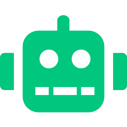
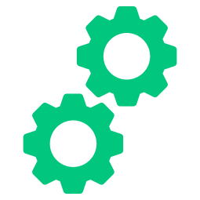
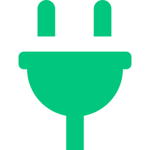
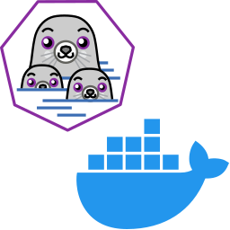

QA Automation Engineer (SDET)
I design and implement structured automation systems for modern web applications. At Wirk, I built and maintained a Cypress end to end suite covering critical user flows, increasing regression coverage from 0% to ~80% of priority workflows while improving release confidence and test reliability. My background in independent software development strengthened my system architecture thinking, edge case analysis, and debugging depth - Directly applied to building maintainable, scalable test systems. Focused on early stage startups building their first structured QA systems.
Skills
Core technologies used in automation architecture, CI pipelines and test system design.

Test Automation
Cypress

CI/CD
TypeScript
GitHub Actions

API Testing
Playwright

Docker / Podman
Projects
Selected automation and system architecture projects demonstrating production-grade QA strategy.

Invoice Flow - Automation First Full-Stack Application
Full-stack application built to demonstrate production-grade automation architecture and CI reliability.
- • Backend: Node.js, Express, TypeScript, Postgres
- • Schema validation with Zod
- • End-to-end testing with Cypress
- • CI pipeline with GitHub Actions
- • Dockerized development environment
- • Bulk operations, structured error handling & logging
Wirk - Cypress Automation Strategy
Designed and maintained structured Cypress automation suite for critical web application flows.
- • Built regression coverage from 0% to ~80%
- • Identified architectural testability issues
- • Improved automation stability and CI reliability
- • Coordinated QA freelancers
- • Contributed to automation tooling decisions
Open Source Contributions - Stronghold Crusader
Contributed via GitHub pull requests to the Unofficial Crusader Patch. Credited in the video game Stronghold Crusader: Definitive Edition release.
- • Code review collaboration via GitHub
- • Patch validation & regression testing
- • Community driven development workflow